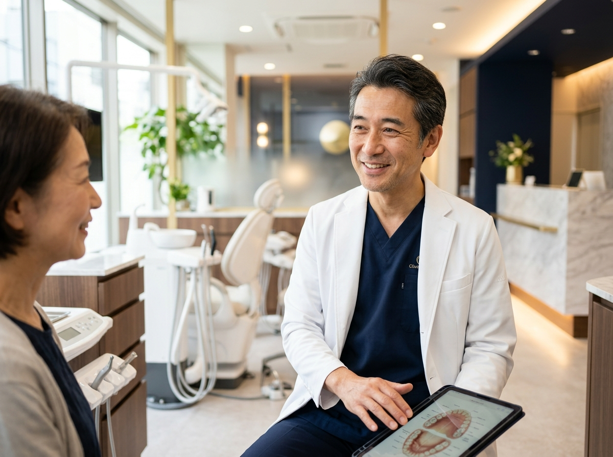
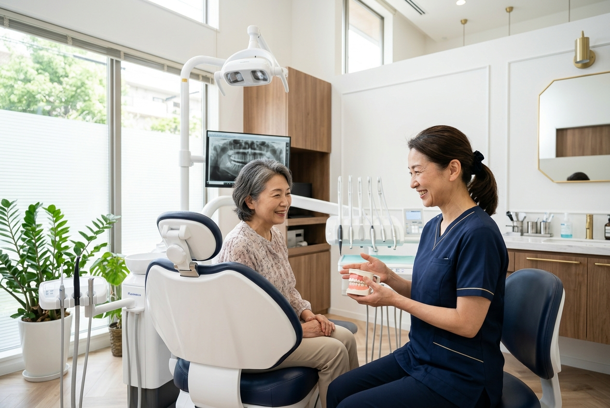
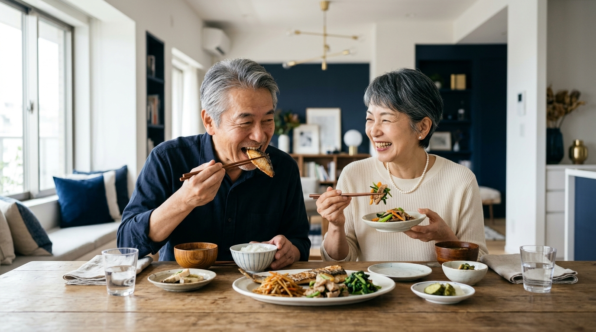
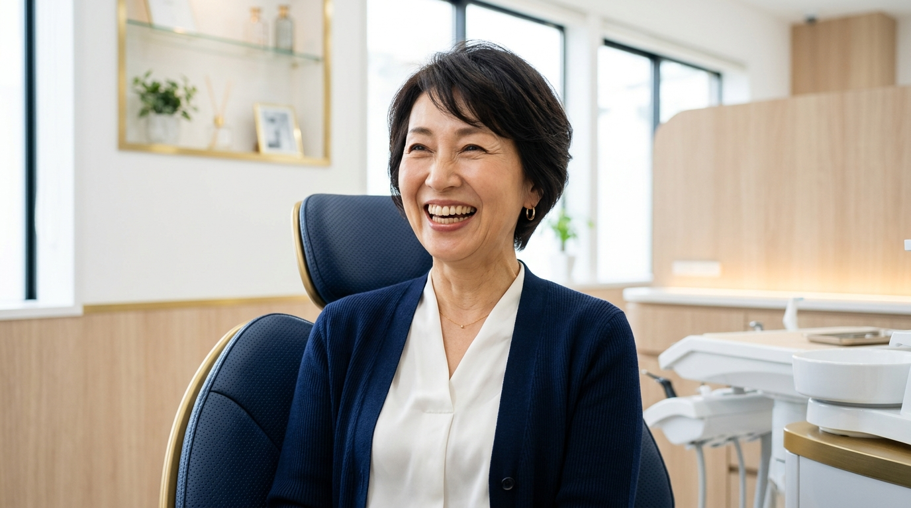
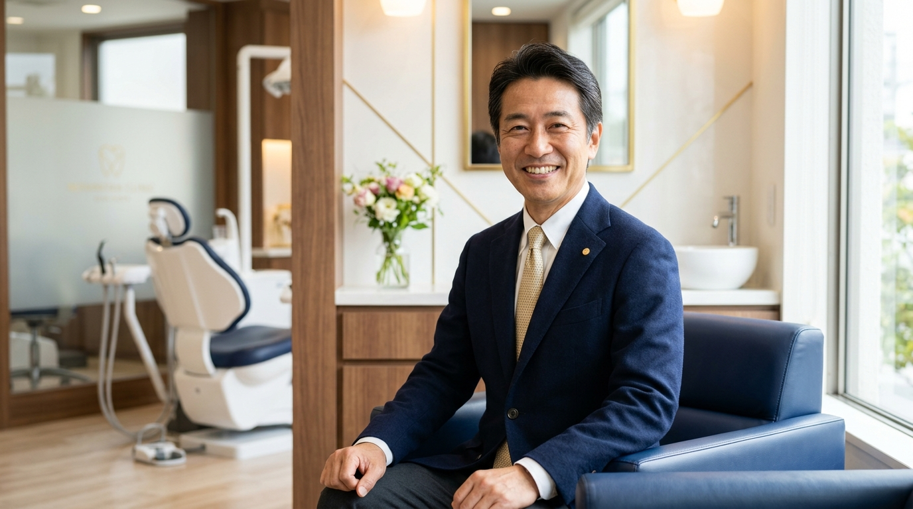
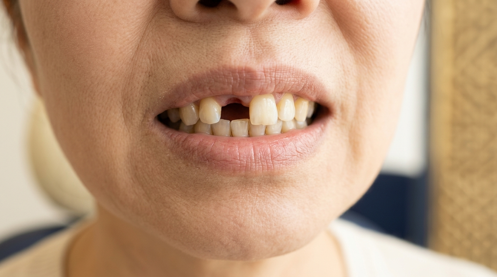
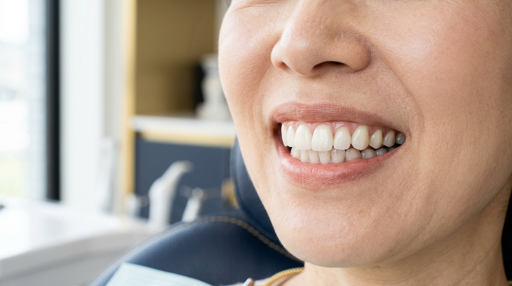
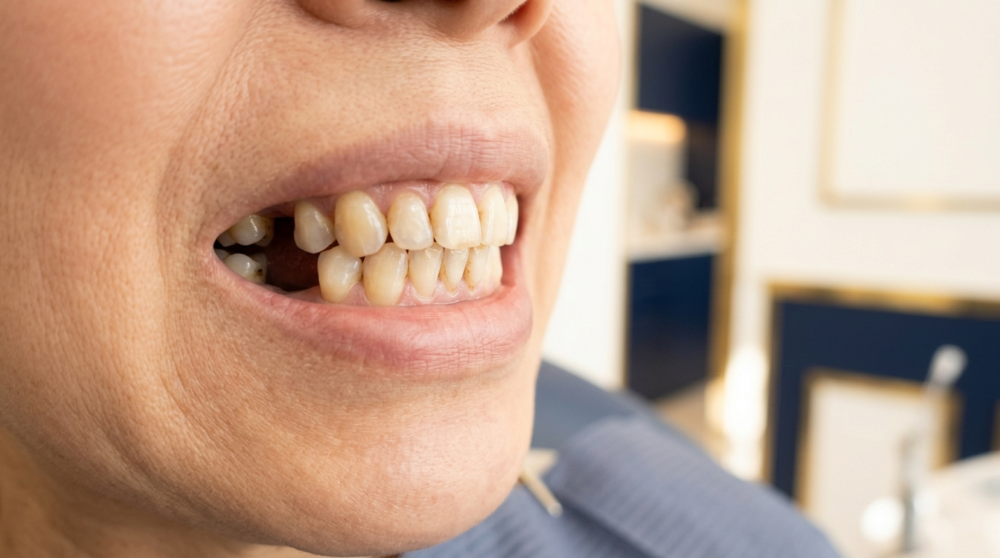
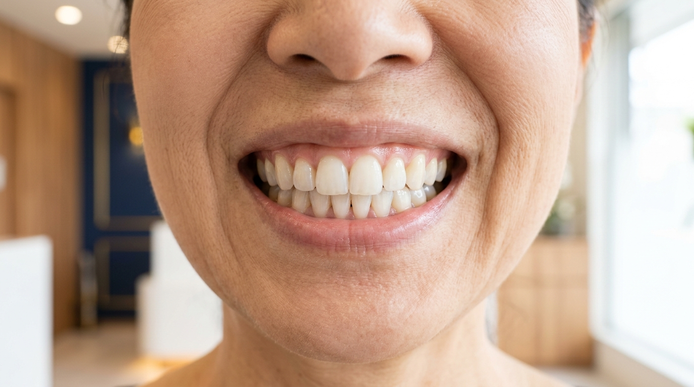

土井クリニックDOI IMPLANT CLINIC
「食べる」「話す」「笑う」——あたりまえの毎日を、もう一度。
土井クリニックは、痛みに配慮したインプラント治療で、あなたの不安に寄り添います。まずはお気軽にご相談ください。

歳を重ねると、お口の悩みは増えていくもの。
次のようなお気持ち、あなたにも心当たりはありませんか。
そのお悩み、
私たちが一番よく分かっています。
当クリニックには、あなたと同じ不安を抱えて来院される患者様がたくさんいらっしゃいます。「今さら相談していいのかな」「こんなこと聞いても大丈夫かな」——そう思う必要はまったくありません。
大切なのは、無理に治療を決めることではなく、まずはお気持ちを整理してみること。私たちは、あなたのペースに合わせて一緒に考える伴走者でありたいと思っています。
まずは無料相談で、気持ちを整理してみませんか？
それだけでも、心がふっと軽くなります。

インプラントは、失った歯の代わりに人工の歯根を埋め込み、しっかり噛める歯を取り戻す治療法です。入れ歯のようなズレや痛みが少なく、見た目も自然。土井クリニックでは、あなたの不安を一つずつ取り除くことを大切にしています。
インプラントは、噛む力だけでなく、あなたの笑顔と自信も取り戻します。

お肉もお漬物も、硬いおせんべいも。ご自分の歯のようにしっかり噛めるから、食事の時間がまた楽しみになります。

口元を気にして手で隠すこともなくなります。写真も、会話も、これまで以上に自然に楽しめるようになります。

歯がそろうと口元がふっくらとし、表情も明るく。周りの方から「若くなったね」と言われる方も少なくありません。
その未来、無料相談から始めませんか？
今すぐ無料相談する▶数字と実績、そして患者様の声が、私たちの治療を物語ります。
長年入れ歯で悩んでいましたが、思い切って相談してよかったです。今では孫と同じものを食べられるのが本当に嬉しい。先生もスタッフさんも優しく、不安がすっと消えました。
— 68歳・女性（治療期間：約5ヶ月）
痛みが怖くて何年も先延ばしにしていました。でも実際は想像していたよりずっと楽で、拍子抜けするほど。もっと早く来ればよかったというのが正直な気持ちです。
— 57歳・男性（治療期間：約6ヶ月）

Before
After| 治療内容 | 保存が難しくなった前歯を抜歯し、インプラントを1本埋入。約3ヶ月後にオールセラミッククラウンを装着して自然な見た目を回復しました。 |
|---|---|
| 費用 | 396,000円（税込）※自由診療 |
| 治療期間・回数 | 計約5ヶ月・計5回 |
| リスク・副作用 | 手術後に痛み・腫れ・出血を伴う場合があります。 |

Before
After| 治療内容 | 合わない入れ歯を使用されていた奥歯部分に、複数本のインプラントを埋入。しっかり噛める状態を取り戻し、硬いものも食べられるようになりました。 |
|---|---|
| 費用 | 792,000円（税込）※自由診療 |
| 治療期間・回数 | 計約7ヶ月・計7回 |
| リスク・副作用 | 手術後に痛み・腫れ・出血を伴う場合があります。 |
土井クリニックでは院内に歯科技工室を併設し、技工士と歯科医師が密に連携。外部発注や輸送の工程を減らすことで、品質を保ちながらコストと期間を抑えています。さらに専門医による分業体制で、一人ひとりに質の高い治療を無理のない価格でご提供しています。
初めての方でも安心いただけるよう、一つひとつ丁寧に進めます。
お悩みやご要望をじっくりお聞きします。無理に治療を勧めることはありません。まずは気持ちを整理する場としてご利用ください。
最新のCTでお口とあごの骨の状態を三次元的に把握。あなたに最適な治療計画をご提案します。
痛みに配慮した術式で、専門医が丁寧に手術を行います。骨が少ない方には骨を補う方法もご提案します。
インプラントと骨がしっかり結合したのを確認してから、被せ物の型を取ります。
自然な見た目と噛み合わせにこだわったセラミックの歯を装着し、治療完了です。
治療後も定期検診で長く快適にお使いいただけるようサポート。永久保証で一生涯を見据えます。
396,000円〜（税込）
※自由診療 / インプラント1本あたり
「相談だけ」でも大歓迎。あなたの負担が少しでも軽くなるよう、こんなご用意をしています。
費用のご心配なく、まずはお話だけでもお聞かせください。
ご予算に合わせた無理のないお支払いプランをご相談いただけます。
万が一のトラブルにも対応。長く安心してお使いいただけます。
この機会に、気軽に一歩を踏み出してみませんか？
今すぐ無料相談する▶当クリニックのカウンセリングは、すべて専門医が丁寧に担当いたします。おひとりに十分な時間をお取りするため、1日の受付人数には限りがあり、完全予約制とさせていただいております。ご希望の日時が埋まってしまう前に、どうぞお早めにご連絡ください。
みなさまからよくいただくご質問にお答えします。
お電話・LINE・フォームの、ご都合の良い方法でどうぞ。
「相談だけ」でもまったく問題ありません。一緒に考えましょう。
お電話でのご相談
0120-000-000
受付 9:30 - 19:00 / 水・日休
LINEでのご相談
@doi-implant
24時間受付・お気軽にどうぞ